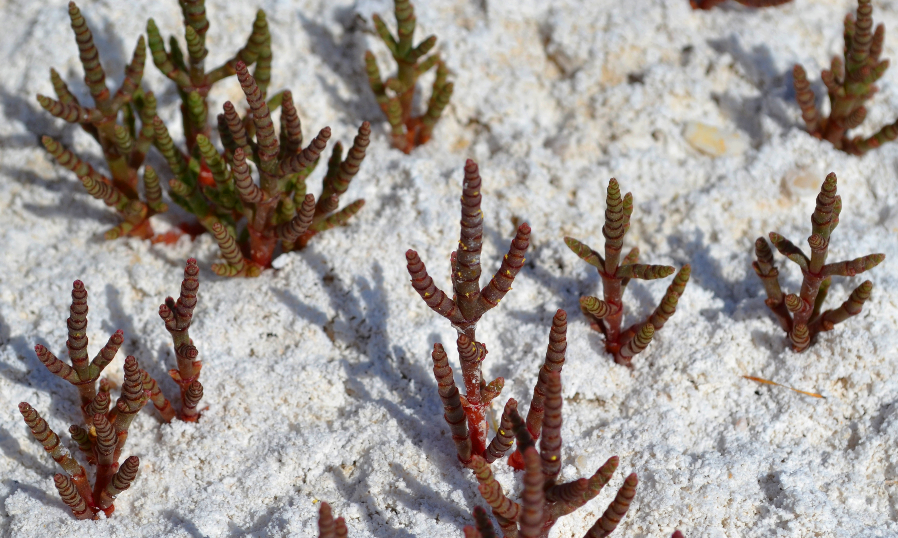
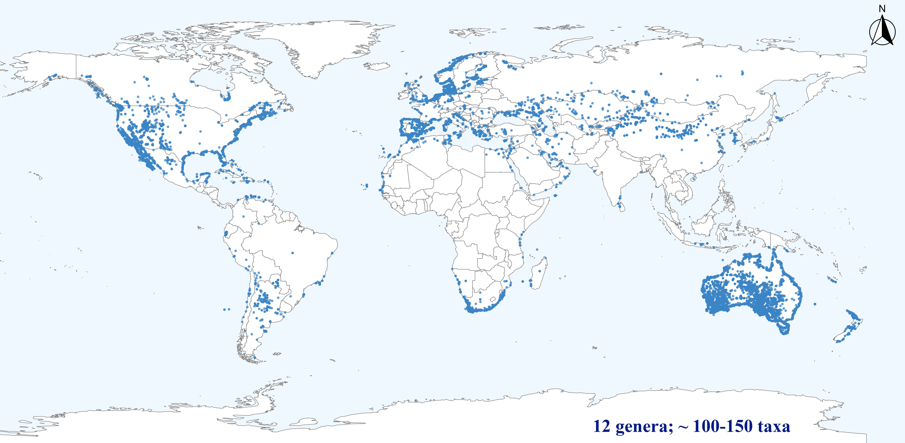

Understanding diversity, evolution, and ecology of salt-tolerant plants
I study salt-tolerant plants (halophytes) as integrative systems to address broad questions in plant diversity, evolution, and ecology across saline environments. My research combines field-based vegetation studies with herbarium-derived data, taxonomy, phylogenetics, and computational approaches to uncover biogeographic patterns and the environmental drivers shaping plant diversity. Alongside this fundamental research, I pursue applied lines of work focused on germination optimization and the characterization of mineral and bioactive compounds, with potential applications in agricultural, medicinal, and pharmacological contexts.
Plant life under extreme salinity
Salinity imposes one of the strongest constraints on plant life. Across saline systems, extreme osmotic stress, intense solar radiation, and seasonal water limitation exclude the vast majority of vascular plants, leaving only a small set of highly specialized lineages able to persist.

Hyperhalophytic endemics of the Central Iberian Peninsula (Microcnemum coralloides) thriving on hardened, salt-encrusted soils during the summer months.
Salicornioideae as a model lineage
Salicornia and related genera, commonly known as glassworts or samphires, comprise a lineage of highly specialized halophytic plants with a global distribution across saline ecosystems. They dominate plant communities and structure extensive salt-affected landscapes, from cold continental salt deserts of Eurasia to tidally influenced coastal marshes worldwide.
Beyond their ecological dominance, Salicornioideae serve as a powerful model system for extreme adaptation. Shaped by intense environmental stress, these plants act as natural factories of secondary metabolites and mineral compounds, linking extreme environmental stress to biochemical innovation.

Global distribution of Salicornioideae (Amaranthaceae–Chenopodiaceae).